ШҚО ТУБЕРКУЛЕЗГЕ ҚАРСЫ ҚЫЗМЕТІНІҢ ҚАЛЫПТАСУ ТАРИХЫ
Зерттеудің негізгі көздері Шығыс Қазақстан облысы Мемлекеттік мұрағатының, Денсаулық сақтау департаментінің, облыстық туберкулезге қарсы диспансердің қорларында сақталатын құжаттар және облыстың туберкулезге қарсы мекемелерінің ОТҚД қызметкерлерінің жеке естеліктері болып табылады. Өкінішке орай, өртке байланысты көптеген мұрағаттық деректер жойылды.
Семей губерниясының құрамына кіретін Өскемен уезінде туберкулезге қарсы диспансер болған жоқ. Өскемен қаласында туберкулез пункті және облыстық ауруханада 5 төсек орын болған.
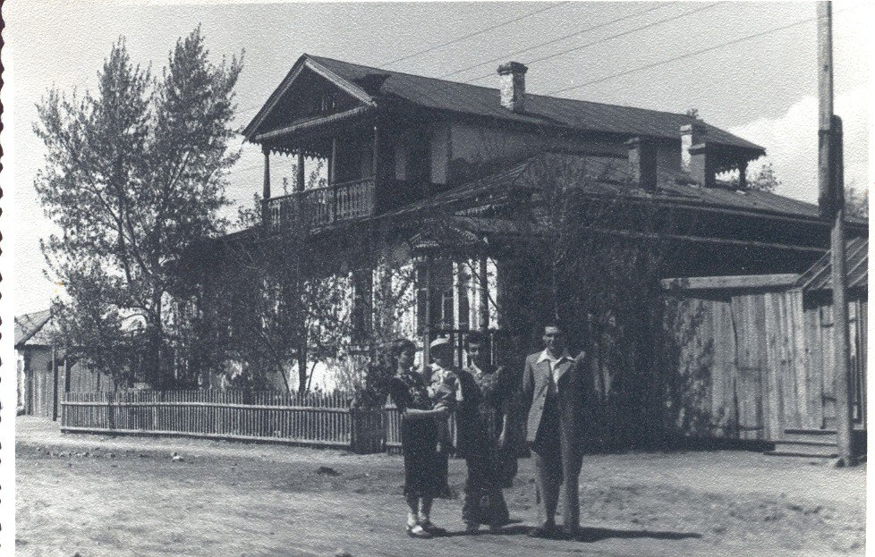
1948 жылдың 1 желтоқсанында Шығыс Қазақстан облысында 50 туберкулезге қарсы төсек болды: Зырян қаласында-10 және 5 төсектен Зайсан, Киров, Лениногорск, Предгорный және Самарда.
1949 жылғы 18 қаңтарда Шығыс Қазақстан облыстық еңбек депутаттары Кеңесінің Атқару Комитеті облыста туберкулезге қарсы төсектерді 265-ке дейін кеңейту туралы шешім қабылдайды.
1950 жылы 15 қарашада ШҚО еңбекшілер депутаттары Кеңесінің Атқарушы комитетінің шешімі бойынша Өскемен қаласының Новая Гавань кентінде 25 төсектік туберкулезге қарсы қалалық диспансері ашылады.
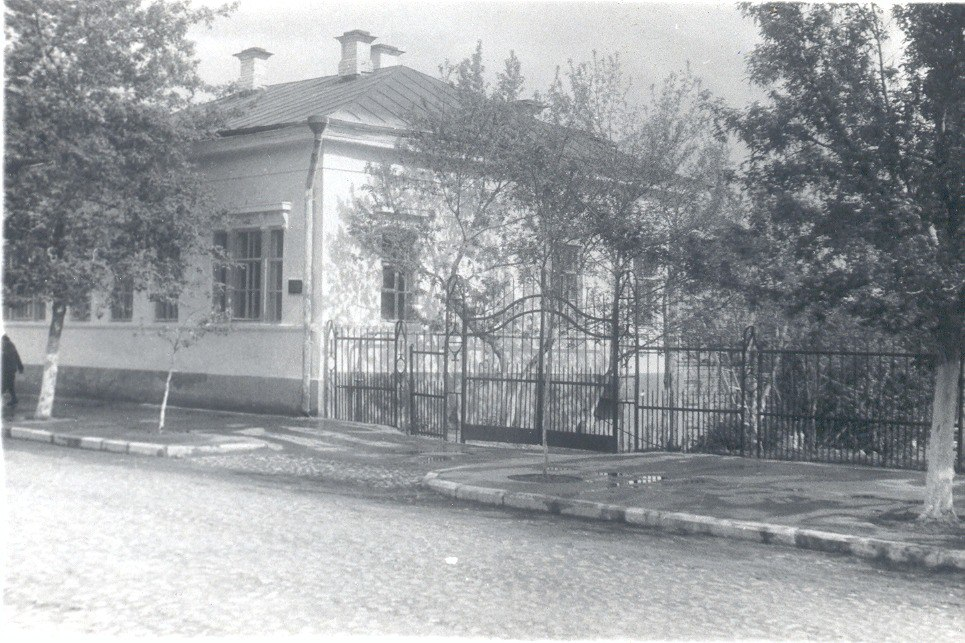
Осы уақытта облыстық туберкулезге қарсы диспансерде жалпы саны 25 төсекке бір-бірінен 4 км қашықтықта орналасқан екі ғимарат болды. Қалада туберкулезге қарсы көмекті дұрыс ұйымдастыру үшін қажетті материалдық-техникалық базасы жоқ 2 шағын мекеменің болуын ескере отырып, облыстың денсаулық сақтау бөліміне қалалық және облыстық туберкулезге қарсы диспансерді 75 төсектік бірыңғай облыстық туберкулез диспансеріне біріктіруге рұқсат беру туралы шешім шығарылады.
1953 жылы 13 ақпанда екі диспансер біріктірілді. Терапевтік ғимарат Новая Гавань кентінде қалады, ал диспансерлік бөлім Урицкий көшесінде.
Облыстағы төсек – орын желісі 1952 жылы 189-дан 1962 жылы 525-ке дейін өседі, қалалық төсек-орын 432, ауылдық төсек-орын 92.
1963 жылғы 20 шілдеде Қазақстан КП Шығыс Қазақстан өнеркәсіптік обкомы және еңбекшілер депутаттарының өнеркәсіптік облыстық Кеңесінің Атқару Комитеті 75 төсектік стационармен «Өскемен қаласында туберкулезге қарсы қалалық диспансерді өрістету туралы» № 193 қаулы шығарады. Облыс бойынша төсектердің жалпы саны 605-ке дейін өсті.
1972 жылы облыс бойынша 1190 төсек жұмыс істейді, оның ішінде қалалық 785, ауылдық – 405 төсек. Облыстық диспансерде-145 төсек, қалалық диспансерде -170. Шипажай төсектері- 400.
Сол жылы облыстық туберкулезге қарсы диспансер Опытное поле кентіндегі жаңа ғимаратқа көшеді.
1977 жылғы 9 ақпанда облыстық еңбек депутаттары Кеңесінің Атқару Комитеті «Облыстық және қалалық диспансерлердің стационарларын 500 төсектік қуаттылықпен біріктіру туралы» №79 шешім шығарады, ал 1979 жылы диспансерлік бөлімше облыстық диспансерге қосылады.
1983 жылға қарай облыста 3 диспансер, 4 туберкулез ауруханасы, 6 туберкулез бөлімшесі және 8 туберкулез кабинеті болды. Облыс бойынша барлығы шипажайсыз 1050 төсек жұмыс істейді. Шипажай төсектері 370, оның 220-сы балалар төсек-орындары. Балабақшалардағы санаторийлердің саны 1978 жылы 215-тен 1983 жылы 450-ге дейін өсті.
2012 жылға қарай облыс бойынша 5 диспансер, 4 туберкулез ауруханасы, 1 мәжбүрлеп емдеуге арналған туберкулез бөлімшесі және 15 туберкулез кабинеттері жұмыс істеді.
Туберкулез қызметінің төсек қорын оңтайландыру нәтижесінде 2017 жылғы 1 маусымдағы жағдай бойынша облыс бойынша өз құрылымында стационары, диспансері бар 3 заңды тұлға жұмыс істейді:
• Өскемен қ. ОТҚД, 01.09.2016 ж. бастап Тарбағатай ауданының ААТҚД және Риддер қ. ҚТҚД қосылды;
• Семей қ. АТҚД, 01.09.2016 ж. бастап «Березовка» ересек туберкулез санаторийі қосылды;
• Семей қ. БТҚА, 01.09.2016 ж.бастап «Сосна», «Первомайский» 2 балалар шипажайы қосылды.
Тәулік бойы жұмыс істейтін төсектің жалпы саны 715 және күндізгі стационардың 10 төсегін құрайды.
2016 жылдың 1 қыркүйегінен бастап Көкпекті а. туберкулездің созылмалы түрімен ауыратын науқастарға арналған бөлімше жабылып, Зырян қ. ОАА балансына 25 төсек-орын ауыстырылды.
Фтизиатриялық қызметтің қалыптасуы туралы айта отырып, 75 жылдық кезеңнің әртүрлі кезеңдерінде оның жұмысын ұйымдастырған адамдарды атап өтпеуге болмайды.
Облыстық туберкулезге қарсы диспансердің алғашқы бас дәрігері 19.04.1914 ж. т. Шабурова Анна Федоровна болды. 1942 жылы Молотова атындағы Қазақ мемлекеттік медицина факультетін бітірген. ер 20.05.1950 жылдан 1951 жылға дейін бас дәрігер.
Кейінгі жылдардағы бас дәрігерлер:
- Селевёрстов Александр Петрович – 20.08.1919 г.р., Тбилиси қаласындағы медицина институтын бітірген, 20.08.1951 жылдан - 1952 жылға дейін бас дәрігер болған;
- Винников Павел Лазаревич – 1921 г.р, Молотова атындағы Қазақ мемлекеттік медициналық институтының емдеуші-дәрігер факультетін бітірген.Медицина ғылымының кандидаты. 17.11.1952 жылдан 1954 жылға дейін бас дәрігер болған;
- Павлушина Анна Исаевна – қыркүйек 1922ж.т. 1948 ж. Новосибирск мемлекеттік медициналық институтын бітірді.08.02.1954 жылдан -1955 жылға дейін бас дәрігер болған;
- Тутко Борис Дорофеевич 1925 ж.т. 1955 ж. Харьков медициналық институт бітірген,дәрігер-фтизиатр, ҰОС қатысушы, 1-ші Беларусь майданы (Польша, Германия) әскерлерінің құрамында болған 08.09.1955жылдан — 1960 жылға дейін бас дәрігер.
- Брюханова Зоя Гавриловна, 1960 — 1962 жылдары
- Филипченко Владислав Евдокимович, 1962 — 1966 жылдары
- Савченко Анатолий Федорович, 1966 – 1969 жылдары
- Санжак Гертдруда Ивановна, 1969 – 1971 жылдары
- Сидорова Нина Сергеевна, 1971 — 1983 жылдары
- Пономарев Сергей Александрович, 1983 — 1984 жылдары
- Лысенко Валентина Михайловна, 1985 — 1990 жылдары
- Кожасеитов Ришат Кунашевич, 1990 — 2007 жылдары
- Жигитекова Майгуль Абайхановна, 2007 — 2012 жылдары
- Зетов Аскар Шынтасович, 2012 — 2014 жылдары
- Садвакасова Динара Джамбуловна, 2014 — 2020 жылдары
- Сафиоллинова Райфа Сафиоллиновна, 2021 жылдың мамыр айынан қазіргі уақытқа дейін.
Балалар бөлімі
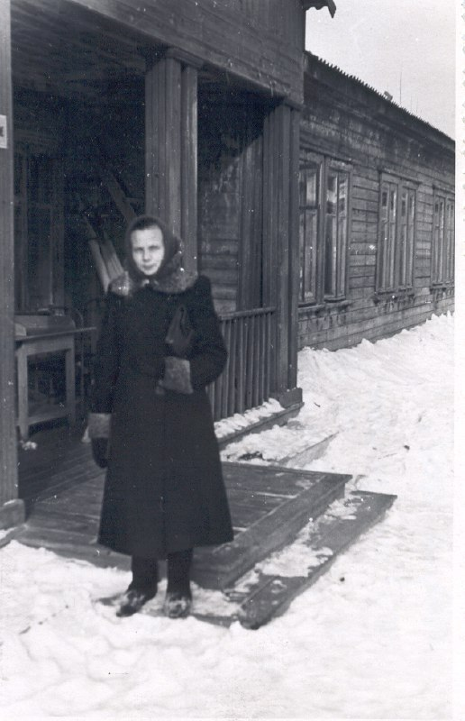
Туберкулезбен ауыратын балаларды Алғашқы қабылдау 1949 жылы Өскемен қаласының № 1 балалар емханасында басталды, онда облыс балаларына арналған туберкулезге қарсы кабинет ашылды.
Қабылдауды Валентина Сергеевна Решетникова жүргізді, болашақта Қазақстан Республикасының еңбек сіңірген дәрігері, 1949 жылы Орынбор мемлекеттік медицина институтын бітіргеннен кейін бізге облысқа жіберілді.
Сол жылдары облыстың фтизиатриялық көмегі №1 балалар ауруханасының бас дәрігері хана Самойловна Мартинсонның басшылығымен жүргізілді, басында небәрі 5 төсек болды, содан кейін олардың саны жыл сайын өсті. Бөлім, тек бір (!) 50 шаршы метрлік палата, ағаш үйдің екінші қабатында орналасқан.
Үш жылдан кейін, 1952 жылы 35 төсектік туберкулез бөлімі ресми түрде тіркеліп, ашылды. Облыстық туберкулезге қарсы диспансердің ашылуына байланысты 60 төсектік балалар бөлімшесі Галина Ганиевна Батованың басқаруымен Опытное поле кентіндегі ғимаратқа ауыстырылады.
Туберкулезді менингитті емдеу бойынша жұмыстың алғашқы терең талдауын Решетникова 1959 жылы және одан кейінгі 60-жылдары бірнеше рет қорытындылады. Валентина Сергеевна 20 жылдан астам жұмыс істеді, ол балалар мен жасөспірімдерде туберкулез менингитін және туберкулездің жергілікті түрлерін ерте диагностикалау мен емдеудің ғылыми негізделген жүйелерін жасады.
Облыстық туберкулезге қарсы диспансердің балалар бөлімшесінің соңғы 20 жылы оқиғаға толы болды. 1995 жылдан бастап балалар бөлімшесін Хамитова Мелания Минасовна басқарды және ол жабылғанға дейін басқарды.
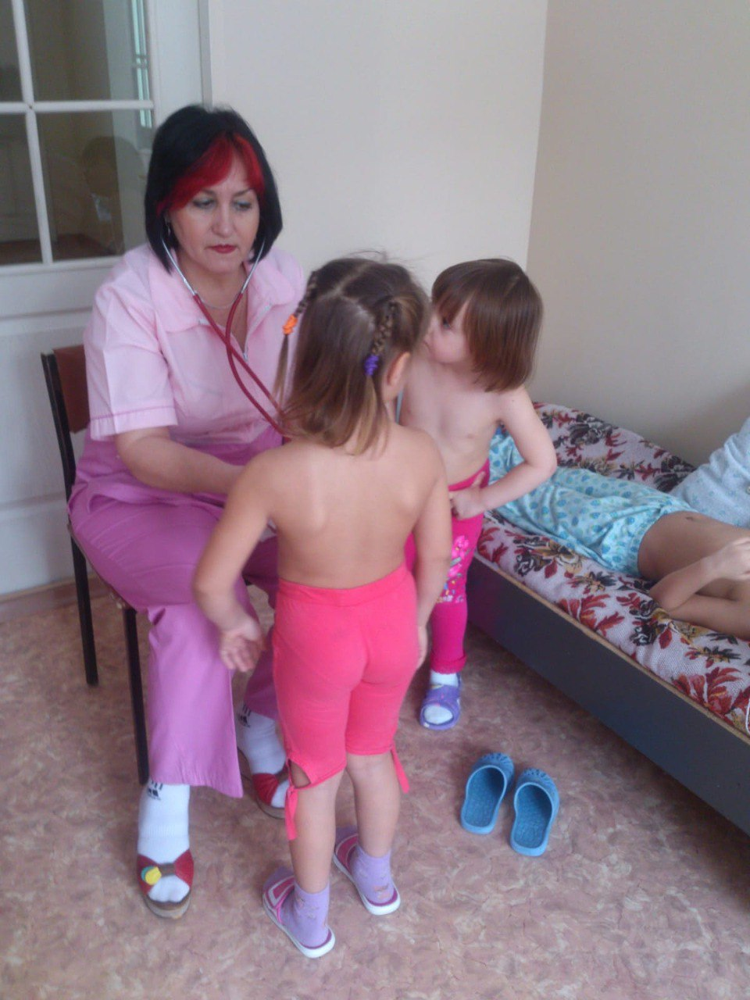
Терапевттік бөлімше
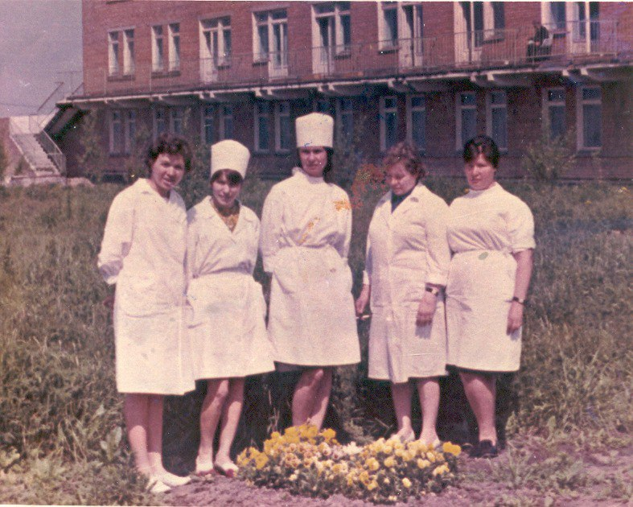
Бастапқыда облтубдиспансердің терапевтік бөлімі Новая Гаваньда орналасқан. Ол бір қабатты барак типті ғимаратта ешқандай ыңғайлылықсыз орналастырылды. 70-ке жуық науқас жатып, екі палата тек туберкулезді менингитті емдеу үшін бөлінді. Бір қызығы, дәлізде екі медициналық бекетте шкафтарда дәрі-дәрмектер сақталып, медициналық құралдар қайнату әдісімен зарарсыздандырылды.
Терапия бөлімін алғашқылардың бірі болып Галина Ахметқызы Қадырбаева басқарды, ол менингитпен ауыратын науқастарды емдеді. Ол жұлын пункциясы бойынша маманданған, жасанды пневмоторакс пен пневмоперитонеум техникасын жетік меңгерген, науқастар оны жақсы көретін және құрметтейтін, оның «қолы өте жеңіл» екенін айтатын.
1972 жылы Опытное поле ауылындағы ғимарат терапевтік ғимарат үшін ыңғайлы, жеңіл және кең болды. Бөлімше меңгерушісі болып Надежда Георгиевна Квашнина тағайындалды.
Екі диспансер біріктірілгеннен кейін терапевтік стационар қалалық тубдиспансердің бұрынғы терапевтік корпусының бес қабатты ғимаратында (осы күнге дейін орналасқан) орналастырылады. Стационар меңгерушісі Елизарова Нина Ивановна болды.
Стационар 3 бөлімшеден тұрды – алғаш анықталған науқастарды емдеу үшін, қайта емдеу және туберкулездің созылмалы көп төзімді түрлерімен ауыратын науқастарды емдеу үшін. Кейінгі жылдары филиалдар біріктіріліп, бөлінді. Қазіргі уақытта ол екі бөлімнен тұрады.
Әр жылдары кафедра меңгерушілері: Надежда Григорьевна Квашнина, Нина Ивановна Елизарова, Анна Яковлевна Пирятинская, Галина Ивановна Самойленко, Назира Нургазиевна Закарьянова, Сергей Александрович Пономарев, Кульбакыт Амировна Жыкбаева болды. Ординатор дәрігерлері Маулия Труспековна Байбатырова, Назым Кәрімханқызы Шаймарданова болды.
Сол кездегі фтизиатрлар мен медициналық дәрігерлердің барлығына тән бір ерекшелігі болды-ол мамандыққа ғана емес, тубдиспансерге деген берілгендік. Принциптілік, талапшылдық, белсенді өмірлік ұстаным, тапсырылған іс үшін жауапкершілік облыстың медициналық жұртшылығы арасында жоғары беделге және танылуға ие болды, және, әрине, пациенттер арасында сүйіспеншілік пен құрметке ие болды.
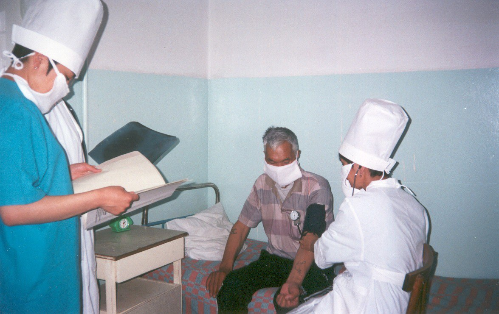
Өкпеден тыс бөлім
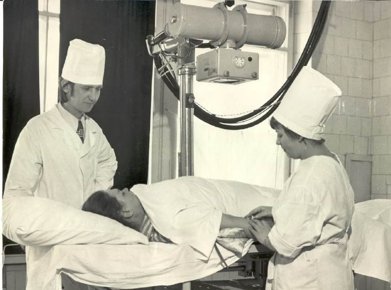
1974 жылға дейін фтизиурология бөлімінде тек 25 төсек болды. Осы жылдан бастап бөлімше кеңейе бастады — урологиялық бейіндегі науқастарды емдеуге арналған 40 төсек, 10 гинекологиялық науқас, сонымен қатар сүйек-буын туберкулезі және туберкулездің басқа да өкпеден тыс түрлерімен ауыратын науқастарға арналған бөлімше құрылды.
1975 жылдан бөлімшені жоғары біліктілік санатты дәрігер Рашид Медиханович Мұстафин басқарды. Рашид Медиханович-дәрігер атағының үлгісі. Ол өз ісін, пациенттерін шынымен жақсы көрді. Оның есімі Шығыс Қазақстан облыстық фтизиопульмонологиялық орталығының тарихына алтын әріптермен енгізілген.
1977 жылы төсек қорын реформалауға байланысты барлық өкпеден тыс патология 100 төсектік бір бөлімшеге біріктірілді, ал 1997 жылы бактерия бөлмейтін (теріс жағынды) туберкулезбен ауыратын науқастарды емдеу үшін 70 төсек бөлінді.
1978 жылдан бастап бөлімшеге уролог дәрігерлер – Вячеслав Николаевич Спиридонов, Владимир Александрович Ботов, Галина Александровна Летова келді.
Бөлім урогенитальды туберкулезбен ауыратын науқастарды диагностикалаумен және емдеумен, бүйрек және зәр шығару жолдарының туберкулезінің дамыған түрлерін ерте анықтау және хирургиялық емдеу әдістерімен айналысты. Емдеудің бірегей тәжірибесі тек Шығыс Қазақстаннан тыс жерлерде кеңінен танымал болды, Рашид Медихановичке Кеңес Одағының түкпір-түкпірінен келді.
Бұл жоғары және бірінші санаттағы жоғары кәсіби және жоғары білікті мамандардың ұйымшыл ұжымы болды. Орташа медициналық персонал 40% санатқа ие болды және кем дегенде 20 жыл жұмыс өтілі болды.
Бөлімшедегі пациенттер күрделі болды, әрқайсысына жеке емдеу және күтім қолданылды. Кәсіби және қамқор көзқарастың арқасында мыңдаған адамның өмірі сақталды.
Фтизиурологиялық қызметтің қалыптасуы мен дамуында Алматы қаласы ҒЗИ қызметкерлері – Елена Петровна Ченских, ҚазҒЗИ урологиялық бөлімшесінің меңгерушісі Арғынбай Төлегенұлы Төлегенов үлкен практикалық және теориялық көмек көрсетті. Олардың көмегімен және олардың басшылығымен облыс тұрғындарын туберкулезге экспедициялық тексеру жүргізілді.
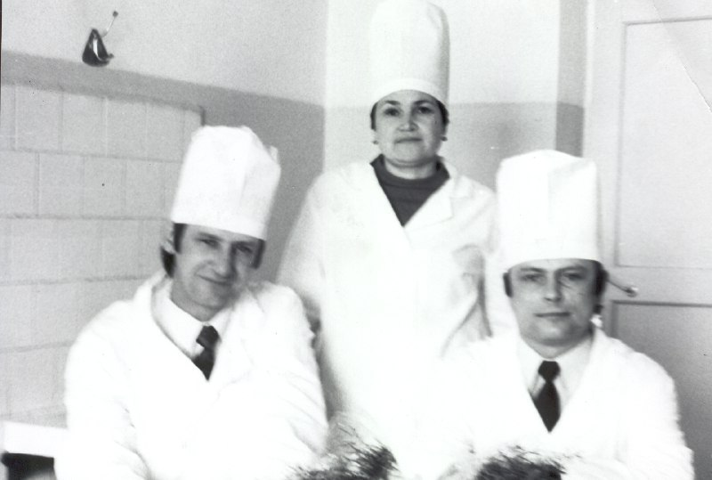
Фтизиурологиялық бөлімше
1974 жылға дейін фтизиурология бөлімінде тек 25 төсек болды. Осы жылдан бастап бөлімше кеңейе бастады — урологиялық бейіндегі науқастарды емдеуге арналған 40 төсек, 10 гинекологиялық науқас, сонымен қатар сүйек-буын туберкулезі және туберкулездің басқа да өкпеден тыс түрлерімен ауыратын науқастарға арналған бөлімше құрылды.
Бас дәрігер Сидорова Нина Сергеевнаның (1971-1983) табандылығы мен қайсарлығының арқасында урогенитальды бөлім сол кездегі заманауи жабдықтармен — диагностикалық және эндоскопиялық жабдықтармен жабдықталған.
1977 жылы төсек қорын реформалауға байланысты барлық өкпеден тыс патология 100 төсектік бір бөлімшеге біріктірілді, ал 1997 жылы бактерия бөлмейтін туберкулезбен ауыратын науқастарды емдеу үшін 70 төсек бөлінді.
Хирургиялық бөлім
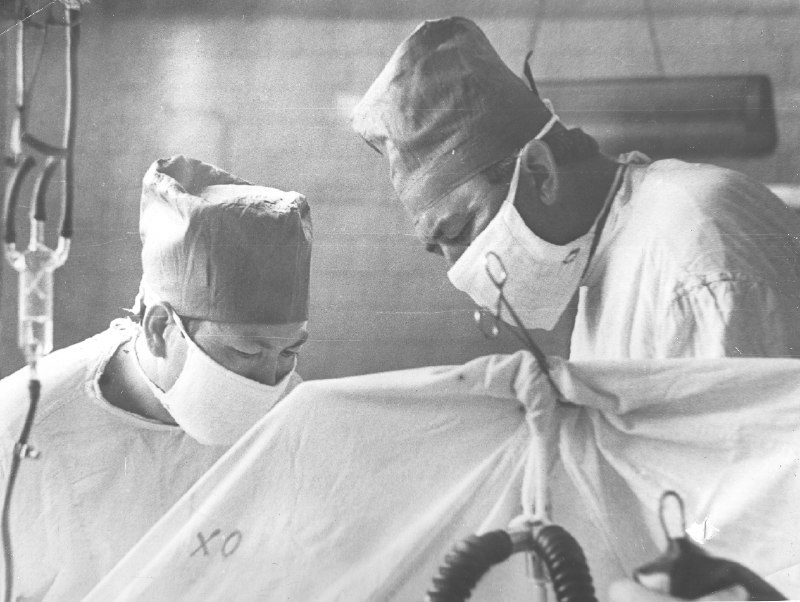
Облыстың хирургиялық қызметінің негізін қалаушы Винников П. Л. Одан кейінгі Фетисов Иван Васильевич и Филипченко Вячеслав Евдокимович, Байтыков Адебиет Райханович.
Бөлімше меңгерушілері болып: Фетисов И.В., Филипченко В.Е, Байтыков Адебиет Райханович, Тюктяев Юрий Василиьевич қызмет етті.
Бөлімше 1960 жылы ұйымдастырылды. Өкпені резекциялаудың алғашқы операциясын Денсаулық сақтау министрлігінің бас хирургі, медицина ғылымдарының докторы Ткаченко Т. М. жасады.Кейіннен бұл операцияны Филипченко В.Е., Фетисов, Сизинцев Н.Т., Байтыков А.Р., Сидоренко В.С. Абылкаиров К.А., Кожабаев С.К. жасады.
Бөлімше дәрігерлері облыстың туберкулез науқастарына хирургиялық көмек көрсету барысында ұйымдастыру-әдістемелік,консультациялық-тәжрибелік көмекті жүзеге асырды.
Бөлімшенің қуаты хирургиялық бейіндегі 190 кереуетті құрады:
• 70 – кеуде
• 60 – урологиялық
• 60 – сүйек-буын.
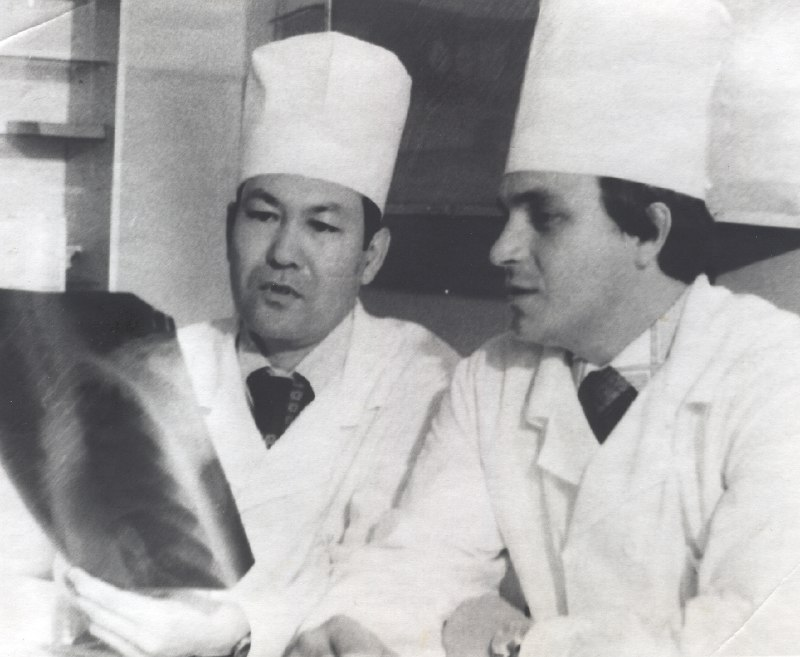
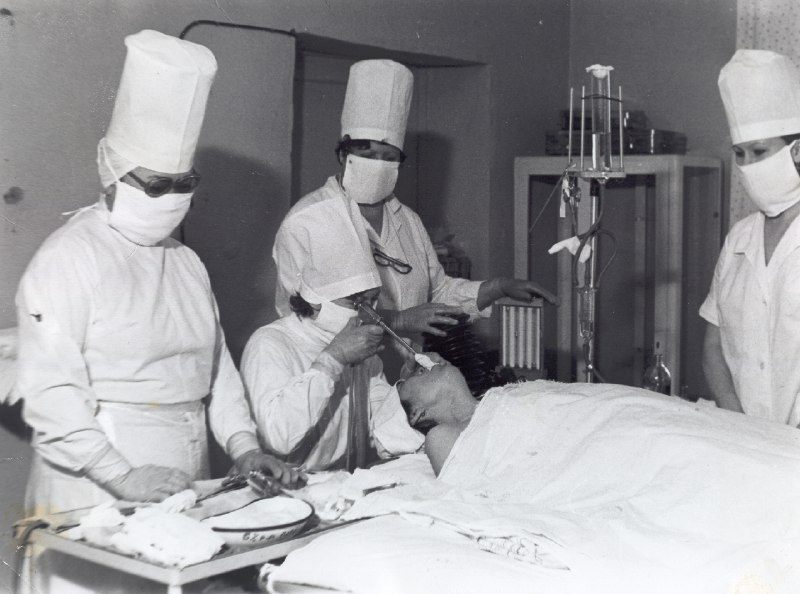
Анестезиология және реанимация бөлімі
КСРО Денсаулық сақтау министрінің бұйрығына сәйкес Шығыс Қазақстан облыстық туберкулезге қарсы диспансер базасында 1977 жылы қуаттылығы 500 төсек-орын мен хирургиялық бейінде 190 төсекпен құрылды.
Бөлімше ұйымының бастауында тұрған бірінші меңгеруші Костикова Тамара Иосифовна болды. Бөлімше жоспарлы және шұғыл операциялар кезінде кереуеттердің хирургиялық бейіні бөлімшесіне анестезиологиялық көмекпен қамтамасыз етті.
Эндоскопиялық зерттеулер Жалпы анальгезиямен жүргізілді. Операциядан кейінгі науқастарға қарқынды терапия бүкіл диспансер бөлімшесінің төсектерінде жүргізілді, онда алғашқы 2-3 тәулікте анестезист – мейіргерлердің тәулік бойы бақылауы қамтамасыз етілді.
1989 жылғы қаңтардан бастап КСРО ДСМ № 841 бұйрығына сәйкес осы кезеңнен бастап 6 төсектік Анестезиология және реанимация бөлімшесі ашылды, анестезиологиялық көмектен басқа, бөлімшеде операциядан кейінгі науқастарға қарқынды терапия, негізгі және қатар жүретін аурулардың әртүрлі асқынуларының нәтижесінде туындаған шұғыл жағдайларда реанимациялық көмек көрсетіледі.
Жыл ішінде жоспарлы және шұғыл операциялар мен эндоскопиялық зерттеулер кезінде орташа есеппен 150-250 анестезиологиялық көмек көрсетілді. Бір жыл ішінде бөлімше арқылы 200-300 науқас өтеді, орташа болу ұзақтығы 5-7 күн.
Бөлімше қажетті наркозды-тыныс алу аппаратурасының кешенімен, облыстық диспансердің тиісті деңгейіне сәйкес құрал-саймандардың қосалқы жиынтығымен жарақтандырылды.
Өткен кезеңде дәрігер анестезиолог болып:
- Пименов Г.А.
- Шмакова Л.А.
- Редько В.В.
- Ершова Валентина Ивановна
Алғашқы анестезист-мейіргерлер:
- Сигнарь Я.В.
- Серохвостова Г.В.
- Раева Е.В.
Мүмкіндігінше анестезиологияда, реаниматологияда, қарқынды терапия жүргізуде заманауи жетістіктер енгізілді. 2000-2001 жылдары заманауи наркозды–тыныс алу аппаратурасы, құрал-саймандар, Ультрадыбыстық диагностика аппараты сатып алынды.
Анестезиология және реанимация бөлімшесінің қызметкерлері облыстық диспансер бөлімшелеріне әдістемелік және практикалық көмек көрсетті.
Бөлім меңгерушісі анестезиолог-реаниматолог жоғары санатты дәрігер Қалиев Өміржан Қалиұлы, негізгі жұмыстан басқа, қытайлық емдік-сауықтыру гимнастикасы: ЦИГУН және УШУ-ТАЙЦЗИЦЮАНЬ сүйікті іс болды. Өміржан Қалиұлы емдік гимнастиканың осы түрлерімен сауығып кеткісі келетіндерге сабақ берді.
Клиникалық-диагностикалық зертхана
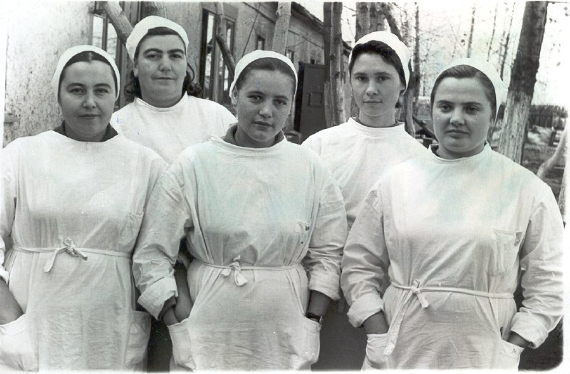
Мен сіздерге жалбарынамын: зертха деп аталатын осы қасиетті тұрғын үйлерге қамқорлық жасаңыз. Олардың санын көбейтуді және оларды жабдықтауды талап етіңіз. Бұл болашақ байлық пен әл-ауқаттың храмдары. Луи Пастер
Шығыс Қазақстан облысында туберкулезге қарсы мекемелердің зертханалық қызметінің дамуы мен қалыптасуы Қазақстан Республикасының барлық туберкулезге қарсы қызметінің дамуымен тығыз байланысты.
1953 жылы облыстық туберкулезге қарсы диспансердің ұйымдастырылуына және ашылуына байланысты оның базасында клиникалық зертхана ашылып, онда 2 зертханашы жұмыс істеді. Жұмыс көлемі мынадай талдауларды: ESR, лейкоциттер, гемоглобин, зәрді, қақырықты жалпы талдау, қарапайым әдіспен ВК анықтауды орындаудан тұрды.
Алғашқы дәрігер-зертханашы К.И.Буйнова болған.
Клиникалық зертхана базасында 1966 жылы биохимиялық (Панюкова Н.И.) және бактериологиялық (Венгер.Г.И.) бөлімдері ұйымдастырылды.
Алғашқы биохимиялық зерттеулер титрлеу әдісімен жүргізілді, ал аппаратураны (ФЭК, гемоглобинометр, ДС-метр, термостат, қанның сілтілі резервін анықтауға арналған аппарат) сатып алғаннан кейін көмірсулар алмасуын, ақуыз-пигментті, су-тұзды және т. б. анықтау бойынша зерттеулер енгізіле бастады.
Туберкулезге қарсы препараттардың оңтайлы дозасын анықтау үшін 1970 жылдан бастап медицина ғылымдарының докторы, профессор Л.Б. Шефер туберкулез ҚазҒЗИ-да әзірлеген ГИНК инактивациясы және зәрдегі препараттарды анықтауға арналған индикаторлық әдіс (дәрі-дәрмектерді қабылдауды бақылау) енгізілді.
Сонымен қатар хирургиялық емдеуге қажетті гематологиялық, Жалпы клиникалық бөлімдерде зерттеу әдістері кеңейтілуде. ВК анықтау үшін флотация әдісі және медицина ғылымдарының кандидаты М. Т. Харун - туберкулез ҚазҒЗИ КДЗ меңгерушісі әзірлеген ультрадыбыстық көмегімен туберкулезді зертханалық диагностикалаудың жаңа әдісі енгізілуде.
Бактериологиялық бөлімде ВК-да, патогендік флорада, саңырауқұлақтарда қақырық екпесі жүргізілді. жұмыс көлемі үнемі өсіп отырды, препараттарға сезімталдықты анықтау және теру әдісі енгізілді.
1968 жылы жылжымалы клиникалық-диагностикалық зертхана сатып алынды, осыған байланысты шалғай аудандарға барған кезде жергілікті жерлерде тексеру мүмкіндігі пайда болды.
1980 жылдан бастап онкологиялық ауруларды дифференциалды диагностикалау үшін патологиялық материалға Цитологиялық зерттеулер енгізілді.
Туберкулез процесінің белсенділігін анықтау үшін Ленинград фтизиопульмонология ғылыми-зерттеу институтында әзірленген иммунологиялық зерттеу әдістері енгізілуде.
1989 жылдан бастап реанимация бөлімшесіне арналған экспресс-зертхана жұмыс істейді.
Зертхана қызметкерлері үлкен ұйымдастырушылық-әдістемелік жұмыстар жүргізуде. 1966-1982 жылдар аралығында КДЗ базасында облыстың туберкулезге қарсы мекемелері үшін зертханашылардың алғашқы мамандануы және биохимиялық бөлім бойынша зерттеудің жаңа әдісттық туберкулез диспансері зертханасының базасында Туберкулезді зертханалық диагностикалау бойынша туберкулезге қарсы мекемелердің зертханашылары мен дәрігер ерін жетілдіру мен зерттеудің 10 күндік циклі жүргізілді. 1977 жылы облыс зертханашылар үшін ҚазҰЗЗИ ҚДЗ меңгерушісі Харсун М. Т. бірлесіп облыстық семинар өткізілді.
Клиникалық зертхана үшін 6 әдістемелік ұсыныс шығарылды, 2 журнал мақаласы жарияланды.
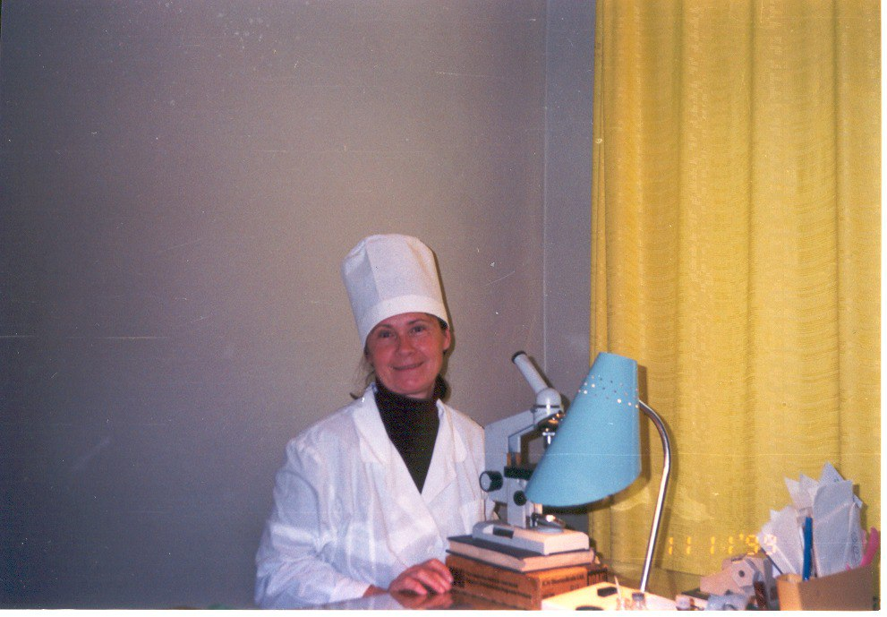
Бактериологиялық зертхана
1974 жылы ЦБЛ клиникалық-бактериологиялық зертхананың құрамынан шықты. Әр жылдары зертхананы Светлана Владимировна Ткаченко мен Галина Викторовна Овсянкина басқарды.
Бактериологиялық зертхана балалар бөлімшесі ғимаратының 2 қабатты ғимаратында орналасқан, қирағаннан кейін әкімшілік ғимараттың 1 қабатына ауыстырылды, содан кейін диспансерлік бөлімшенің ғимаратына, кейін қазіргі уақытта Рабочая көшесі, 6-ға орналасқан.
1971 жылдан бастап облыс бойынша туберкулезге қарсы мекемелердің клиникалық-диагностикалық зертханаларының базасында 3 бактериологиялық зертхана және 10 екпе пункті ұйымдастырылды. Бірінші зертхана Горняк шипажайында, содан кейін Зырян мен Шемонаихада ашылды.
ДОТС бағдарламасының қабылдануымен туберкулезді анықтаудағы басымдық туберкулезге бактериоскопиялық тексеру болды, көптеген аудандардағы екпе пункттері «тыныштық» кезеңінде жабылды, бірақ Облыстың ЕАМ жанындағы бактериоскопиялық кабинеттер ұйымдастырылды. Барлығы 50 зертхана болды – 32 жалпы емдеу желісінде және 18 туберкулезге қарсы мекемелер мен кабинеттерде. Аймақ 37 бинокулярлық микроскоптармен жабдықталған.
Зертанада үлкен жұмыс өтілі бар жоғары білімді зертанашылар жұмыс істеді: Мария Ивановна Яркова, Людмила Николаевна Скиба, Валентина Петровна Литвиненко.
Диспансерлік бөлімше
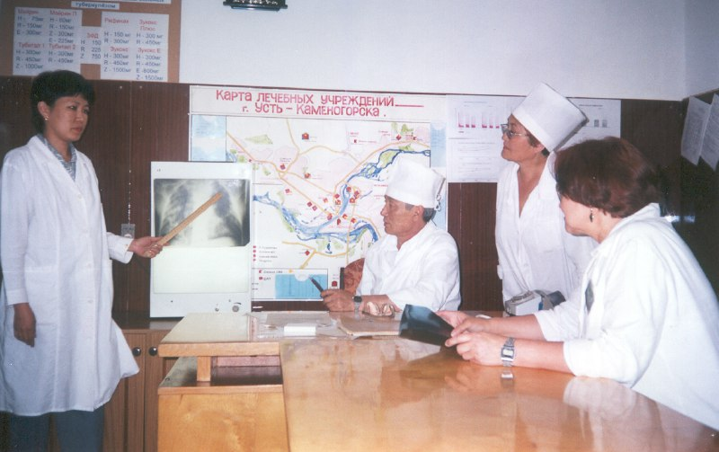
Бөлімше меңгерушісі Сулейменов Омирбек Кайсанович
Облыстық туберкулезге қарсы диспансердің диспансерлік бөлімі қалада және оған бекітілген ауылдарда туберкулезге қарсы іс-шаралар кешенін өткізуді ұйымдастыру және бақылау функциясын, сондай-ақ аудан тұрғындарына консультациялық көмек көрсетуді орындады; негізгі міндеттердің бірі бекітілген елді мекендердің туберкулезге қарсы кабинетіне және жалпы емдеу желісінің емдеу-профилактикалық ұйымдарына ұйымдастыру-әдістемелік көмек көрсету болып табылады; диспансерлік бөлімнің және қаланың басқа да денсаулық сақтау мекемелерінің практикасына туберкулездің алдын алудың, диагностикалаудың және емдеудің жаңа әдістерін енгізу.
Бөлім туберкулезбен ауыратын науқастарды анықтады, диагноз қойды, емдеуге жіберді; қолдаушы кезеңде ем жүргізді, санаторий-курорттық емдеуге іріктеу жүргізді, еңбекке уақытша жарамсыздық мерзімдерін белгіледі, МӘСК-те науқастарды ресімдеді.
Жалпы емдеу желісінің жұмысын бақылауды учаскелік дәрігерлер қатарындағы әрбір ЕАМ-да бекітілген кураторлармен жүзеге асырылды. Бөлім қызметкерлері облыстық және курстық семинарларға қатысып, дәрістер оқыды, дәрігерлерді аттестаттаумен семинарлар өткізді. Бөлім облыстың қалалары мен жекелеген аудандарында туберкулезге қарсы іс-шараларды қарқындатуды, туберкулин сынамаларын жүргізудің бригадалық әдісін, балаларға БЦЖ-ны қосымша егуді жүргізді.
Әр жылдары бас дәрігер Р. З. Рахимовтан кейін диспансерде Нушурванов Юрий Михайлович, Парубчишина Елена Александровна, Винтилина Нина Александровна, Варламова Серафима Ермолаевна, Закарьянова Н.Н, Елизарова Н.И, Пирятинская, Степанова В.М., Шымырбаева Р. К., Метелева Светлана Ивановна, Самойленко Галина Ивановна, Манина Вера Лаврентьевна, Галич Зинаида Трофимовна, Глейм Эдуард Васильевич жұмыс істеді.
Олар кез-келген сұраққа жүгінуге және толық жауап алуға болатын жоғары білікті дәрігерлер, эрудит, өз міндеттеріне берілген. Диспансерде диагностикалық жағынан күрделі науқастардың қызықты баяндамалары, демонстрациялары мен талқылаулары бар дәрігерлік конференциялар үнемі өткізіліп тұрды.
Сәулелік диагностика бөлімшесі
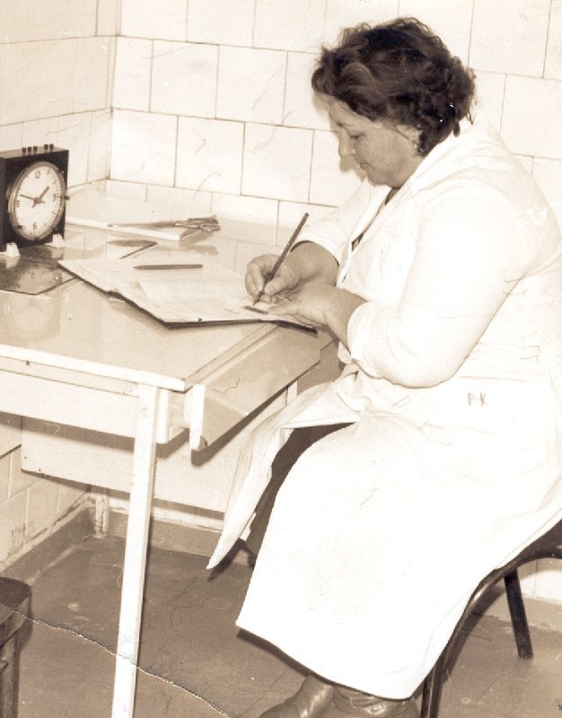
Шығыс Қазақстан облысында рентген-флюорографиялық қызметтің қалыптасуына көптеген дәрігерлер мен рентген зертханашыларының еңбегі ықпал етті: Тутко Борис Дорофеевич, Савченко А.Ф., Санжак Г.И., Сидорова Н.С., Аксенова В.И., Мяснянкина Н.Т., Харько С.А, Кожасеитов Р.К., Хабибулин Т.М., Абдельдинов О.Б.; рентген-зертханашылар – Слуняева Н., Беляева В., Володина Н., Шмакова Л. және басқалар.
Бөлімшенің бірінші меңгерушісі Калинин Дмитрий Яковлевич болды, сол кезде бөлімшеде АРД-25 бір стационарлық рентген аппараты, урдд-110 портативті аппараты, 4 флюорографиялық қондырғы жарақтандырылды. Оларға 2 қызмет көрсететін жаңа санитарлық машина және қосалқы бөлшектерді тасымалдауға арналған жүк көлігі бекітілді. Бұл машиналар халықты туберкулезге тексеру үшін аудандарға барды. С.Г. Корель флюороаппараттарды машиналарға қайта жабдықтағаны үшін, кабинаны қорғауды қамтамасыз еткені үшін, урдд-110 рентгенаппаратын ЗИС 156 К базасына қайта жабдықтағаны үшін, шалғайдағы мал шаруашылығының халқын тікелей тексеруді қамтамасыз ететін құрылғысы үшін «Денсаулық сақтау үздігі» белгісімен марапатталды.
Туберкулезге қарсы диспансер Урицкий көшесінде барак үлгісіндегі ғимаратта (қазір ол жерде ОДА), ал флюорографиялық бөлімше Карла Маркс көшесінде болды.
Кейінгі жылдары РУМ-5, РУМ-10 Диагномакс, РУМ-20, -20м аппараттары және рентгендік диагностикалық кешендер пайда болады. 2001 жылы КРФ-112 алынды.
Рентген-флюорографиялық бөлімшенің иелігінде 6 рентгендік диагностикалық аппарат болды, оларда рентгендік контрастты қоса алғанда, тексерудің барлық түрлері жасалды. Рентгенологтар мен зертханашылар сол кездегі сәулелік диагностиканың барлық түрлеріне ие болды.
1991 жылы Марқакөл ауданына, 1992 жылы Катонқарағай ауданына экспедиция ұйымдастырылды. Экспедицияның міндетіне халықты үздіксіз флюорографиялық тексеру, анықталған патологиясы бар адамдарға клиникалық-рентгенологиялық жете тексеру (рентгенография, томография, ВК-да қан мен қақырықты талдау; халықтың инфекциясын зерттеу, науқастардың контингентін нақтылау, оларды жете тексеру, емдеу) жүргізілді.
Алдыңғы жылдары туберкулезді анықтаудың басым әдісі халықты профилактикалық тексеру болды. Dots стратегиясын енгізген сәттен бастап флюорографиялық әдіс біршама артта қалды, бірақ өзектілігін жоғалтпады, өйткені қазақ Республикасы Денсаулық сақтау агенттігінің 18.05.2001 ж. № 471 соңғы бұйрығымен туберкулезге міндетті профилактикалық медициналық тексеруден өтуге жататын адамдар тобы кеңейтілді.
Бөлімше меңгерушісінің бірі бірінші санатты дәрігер-рентгенолог Орынтай Булатович Абельдинов болды.
Ұйымдастыру-әдістемелік бөлімі
Кабинет меңгерушісі
Ұйымдастыру-әдістемелік кабинет облыстық диспансер құрылған күннен бастап құрылды. Кабинеттің бірінші басшысы 1953 жылы Ирина Петровна Набокова болды. Кейінгі жылдары: Юрий Михайлович Нушурванов, Степанова В.Н., Галина Ивановна Самойленко, Назира Нургазиевна Закарьяновна, Омирбек Кайсанович Сулейменов, Бахтыжамал Бабагумаровна Искакова жұмыс істеді.
Ұйымдастыру-әдістемелік кабинеттің негізгі міндеттері жылдық статистикалық есептерді және ай сайынғы жедел есептілікті талдау болды; облыстың туберкулезге қарсы қызметінің көрсеткіштерін әзірлеу және зерделеу; туберкулезге қарсы іс-шараларды ұйымдастыру және жоспарлау, олардың орындалуын бақылау; директивалық құжаттар мен ақпаратты дайындау.
Стратегия саласында Дүниежүзілік денсаулық сақтау ұйымы ұсынған туберкулезбен ауыратын науқастарды сәтті емдеуді қамтамасыз ететін маңызды фактор қарқынды және қолдау кезеңдерінде емдеу нәтижелерін үнемі бақылау жүйесі болды.
Тағы бір маңызды буын компьютерлендірілген бақылаумен құжаттық тіркеу негізінде жүргізілетін іс-шаралар кешенінің дұрыстығына тұрақты мониторинг жүргізу және оқыту болды.
Ұлттық Туберкулез проблемалары орталығының, "НОРЕ" жобасының күшімен Өскемен және Семей қалаларында 4 көшпелі циклде 117 фтизиатр дәрігер, 23 зертханашы дәрігер, 22 эпидемиолог, 20 бактериолог дәрігер, ІІМ жүйесінің 12 дәрігері оқытылды.
1998 жылдан бастап 2001 жылға дейінгі кезеңде облыстың емдеу – профилактикалық мекемелері мен кәсіпорындарының 3 800 маманы оқытылды.
Облыста туберкулезбен ауыратын науқастарды диагностикалау мен емдеуді қадағалаудың компьютерлік бағдарламасы енгізілді. Ұлттық орталықпен тығыз ынтымақтастықта статистика бөлімінде КТБ-ның жаңа нұсқасы, ТБ-07, ТБ-08 есеп беру нысандарына сәйкес шығыс құжаттарын қалыптастыру жөніндегі бағдарлама және бастапқы деректерді талдау үшін қажетті басқа да бағдарламалар сынақтан өткізілді.
Көптеген жылдар бойы бөлімде тәжірибелі статистик Нина Николаевна Подрезова, Республиканың 2 облысында "КТБ" бойынша куратор болып тағайындалған тәжірибелі бағдарламашы Светлана Юрьевна Азовская жұмыс істеді.
Облыстық туберкулезге қарсы диспансердің статистикалық кабинетінің негізгі қызметкерлері статистиктер Зинура Баткеновна, Альмира Болькеньдиковна Манасова болды.
2000 жылғы 1 қаңтардан бастап 2001 жылғы 1 қыркүйекке дейінгі кезеңде ҚБТҚ стратегиясы бойынша ем алған 4678 науқасқа арналған деректер базасы құрылды. Ұлттық орталықпен, өңірлік туберкулезге қарсы диспансермен және облыстың 2 ауданымен модемдік байланыс енгізілді. Аягөз, Зырян, Лениногор және Жарма туберкулезге қарсы ауруханасының 4 туберкулезге қарсы мекемесінде туберкулезбен ауыратын науқастарды бақылаудың компьютерлік бағдарламасы орнатылды, ол ай сайын облыстық туберкулезге қарсы диспансерде Жалпы деректер базасына біріктірілді.
Бөлім мамандары қалалық және аудандық медициналық ұйымдарға ұйымдастырушылық-әдістемелік, консультациялық және практикалық көмек көрсетті.